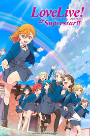

- LoveLive!the school idol project
- 位于东京都千代田区的传统高校“音乃木阪学院”，因为入读的学生人数骤减，所以正面临着废校的危机。其中九位少女为了保护她们喜爱的学校而决定成为偶像，因为只要她们成为偶像，学校的名气便会増加，而入读学生的人数也会随之上升。就这样，九位个性鲜明的少女开始朝着她们的偶像之路而努力迈进了！

- LoveLive!the school idol project 第二季
- 在秋叶原，神田和神保町这三条街上的传统学校，音乃木坂学园正面临着废校的大危机。 面对学校的危机，以二年生高坂穗乃果为中心的九位女生站了出来。 为了保护我们最喜欢的学校，我们能做的事情……。就是，成为偶像！ 通过成为学院偶像向外宣传学校，增加学生人数！从这里开始，她们实现梦想的故事开始了！
- LoveLive!Sunshine!!
- “LoveLive!Sunshine!!”是日升动画、Lantis和《电击G's magazine》共同打造的跨媒体偶像企划“LoveLive!学园偶像计划”于2015年公布的新企划。于2016年7月动画化。《LoveLive!Sunshine!!》讲述了以校园偶像Aqours的身份, 高海千歌为首的九位少女以光芒为目标勇往直前的故事。
- LoveLive!Sunshine!!第二季
- 故事发生在静冈县沼津市海边的小镇、位於内浦的私立浦之星女子学院。 在这间骏河湾一隅的小小高中里面， 以2年级的高海千歌为中心的9名少女，怀抱著远大的梦想挺身而出。 那就是，要成为闪闪发光的“学园偶像”！ 只要努力不懈梦想一定会实现──。 现在只需要朝著那闪耀的目标，奋不顾身地勇往直前就行了！ 从此，少女们“ 大家一起实现的故事”（学园偶像计划）就此展开！
- LoveLive!虹咲学园学园偶像同好会
- 位于东京台场，拥有自由校风和多项专科的人气高中「虹咲学园」。 对学园偶像的魅力感到心动的普通科2年级高咲侑， 和儿时玩伴上原步梦一起敲响了「学园偶像同好会」的门。 有时作为对手，有时作为同伴， 胸怀各自的心意，每天展开活动的成员们。 「如果能够为追逐梦想的人加油的话……。」 9名与1名少女所编织的，第一次的「大家实现梦想的故事（School Idol Project）」。 传达到吧！我们的心动——。 现在，再一次追逐梦想吧！

- LoveLive!虹咲学园学园偶像同好会 第二季
- 位于东京御台场，拥有自由校风和多项专科的人气高中「虹咲学园」。对学园偶像的魅力感到心动的普通科2年级高咲侑，和儿时玩伴上原步梦一起敲响了「学园偶像同好会」的门。 有时作为对手，有时作为同伴，胸怀各自的心意，每天展开活动的成员们。「如果能够为追逐梦想的人加油的话……。」12名与1名少女所编织的，第一次的「大家实现梦想的故事（School Idol Project）」。响彻吧！我们的心动——现在，再一次追逐梦想吧！
- LoveLive!Superstar!!
- 私立结之丘女子高等学校， 在表参道、原宿、青山三街道交界之处，一所新设立的学校今年迎来了第一批入学的学生。 没有历史、没有学长、没有名气，要什么没什么的新学校里， 以涩谷香音为中心的五位少女与“学园偶像”相遇了。 我，果然还是最喜欢唱歌了！想通过歌声……实现愿望！ 尚且稚嫩的星星们，不断积累着大大的梦想——。 纯白而拥有着无限可能的她们的「大家一起来实现的故事（学园偶像计划）」。 展翅飞翔吧！我们的LoveLive！

- LoveLive!Superstar!! 第二季
- 私立结丘女子高中 这所位于表参道、原宿与青山三个城区之间的新学校迎来了第二个春天。组成学园偶像团体「莉耶拉」的涩谷香音等人迎来了新生， 有4位新来的少女以“学园偶像”的身份出发了！ ！我想要，和新生一起加油努力—— 这是迎来新成员，目标是启明星的香音等人与我们共同的「携手实现心愿的故事（学园偶像企划）」。展翅高飞吧！我们的爱与演唱会！
剧场版
- LoveLive!The School Idol Movie
- 学园偶像们以演出角逐的大赛“LoveLive!”的上届优胜者μ's，由于三年级的毕业而决定活动结束，然而在毕业典礼后，μ's众人突然收到了一条消息，并由此展开了新的演唱会。 与从未见过的世界接触，一点一点成长着的九个人。她们作为学园偶像，出现了最后能做到的事情。在有限的时间里，μ's所发现的最为愉悦的演唱会。
- LoveLive!Sunshine!!Over The Rainbow
- 本作接续第二季结尾内容。Aqours 在最后一次以浦之星女学院学园偶像身份参加的“LoveLive!”中成功拿下冠军。 但在为转入新学校做准备的1年级、2年级学生面前，意想不到的灾难接连发生!? 不仅如此，前往毕业旅行的3年级生竟然失踪了!? 在各自分离后才初次意识到，彼此间的存在是如此重要… 为了踏出崭新的一步，Aqours 追寻到的答案又是——? 迈向大家的共同目标，闪闪发光的前方! 呈现给所有向未来展翅的人们，最闪亮的Live娱乐电影。